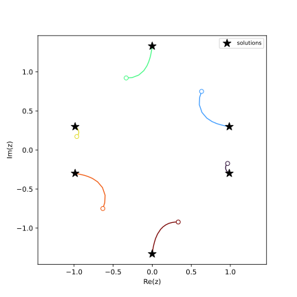
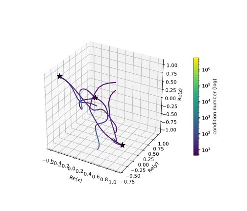
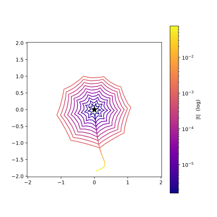

👀 Watching the paths: observers and path data¶
Bertini tracks solution paths, but by default you only see where they end. An observer
lets you watch what happens along the way: it is a small object you attach to a tracker (or to
any observable), whose Observe method is called with an event every time something
happens – a step succeeds, the precision changes, a path starts or ends. This tutorial builds
up from a one-line observer to a meta-observer that records every path of a whole solve into
numpy arrays, and plots them.
Writing an observer in Python¶
Subclass the precision-appropriate CustomObserver base (amp for adaptive precision,
double or multiple for fixed) and override Observe. Events arrive as objects you
discriminate with isinstance(); every tracking event can hand you the live tracker via
event.tracker(), from which you can read the current state of the path:
import bertini
import bertini.tracking as tracking
class StepPrinter(tracking.observers.amp.CustomObserver):
def Observe(self, event):
if isinstance(event, tracking.observers.amp.SuccessfulStep):
trk = event.tracker()
print("t =", complex(trk.current_time()),
" |z| =", trk.current_point(),
" cond =", float(trk.latest_condition_number()))
The tracker exposes the whole per-step state: current_time(), current_point(),
current_precision(), current_stepsize(), delta_t(), latest_condition_number(),
latest_norm_of_step() and latest_error_estimate().
Attach it to a tracker, run, and detach. Here is a small adaptive-precision tracker on the one-variable homotopy \(y - t\) (whose single path runs from \(y=1\) at \(t=1\) to \(y=0\) at \(t=0\)) to watch:
import numpy as np
from bertini.multiprec import complex_mp
y, t = bertini.Variable('y'), bertini.Variable('t')
sys = bertini.System()
sys.add_function(y - t)
sys.add_path_variable(t)
sys.add_variable_group(bertini.VariableGroup([y]))
tracker = bertini.AMPTracker(sys)
tracker.setup(bertini.Predictor.Euler, 1e-5, 1e5,
tracking.SteppingConfig(), tracking.NewtonConfig())
tracker.precision_setup(tracking.amp_config_from(sys))
printer = StepPrinter()
tracker.add_observer(printer)
end = np.zeros(sys.num_variables(), dtype=complex_mp)
tracker.track_path(end, complex_mp(1), complex_mp(0), np.array([complex_mp(1)]))
tracker.remove_observer(printer)
t = ...
...
For the common “call this function when that event happens” case there is a ready-made
CallbackObserver so you do not even write a class:
obs = tracking.observers.amp.CallbackObserver()
obs.on(tracking.observers.amp.PrecisionChanged,
lambda e: print(e.previous(), "->", e.next()))
tracker.add_observer(obs)
tracker.remove_observer(obs)
Note
The event object is only valid for the duration of the Observe call – it is a
short-lived temporary, and so is anything event.tracker() hands back. Read what you
need and copy it out (into a list, a numpy array, …); never stash the event for later.
An observer can also unsubscribe itself by return-ing
bertini.tracking.ObserveResult.Unsubscribe (returning nothing means “keep observing”).
Collecting one path into numpy¶
To plot a path we need its data as arrays. PathDataCollector is an observer that, on every
successful step, records the time, the space point, and a few diagnostics. Adaptive precision
hands back arbitrary-precision (mpfr) numbers, which do not all fit in one numpy array, so each
value is cast to a plain python complex/float as it is collected (double precision is
plenty for a picture). The result is offered as several typed arrays:
b = tracking.observers.amp.PathDataCollector()
tracker.add_observer(b)
end = np.zeros(sys.num_variables(), dtype=complex_mp)
tracker.track_path(end, complex_mp(1), complex_mp(0), np.array([complex_mp(1)]))
tracker.remove_observer(b)
ts = b.times() # complex, shape (n_steps,)
zs = b.points() # complex, shape (n_steps, n_vars)
dgn = b.diagnostics() # float, shape (n_steps, 4): |t|, condition number, precision, stepsize
assert len(ts) > 0 and zs.shape[1] == sys.num_variables()
If you have pandas installed, b.as_dataframe() returns the whole path as a labelled
DataFrame (a t column, one z0, z1, … per variable, then the diagnostic columns).
The meta-observer: every path of a whole solve¶
A zero-dimensional solve tracks many paths, reusing one tracker for all of them. We want
one PathDataCollector per solution path – but a collector watches a tracker, while “which
path are we on” is known only to the solver. The elegant fix is an observer that, in response
to the solver’s events, attaches and detaches other observers: a meta-observer.
That is exactly bertini.SolutionPathCollector. You attach it to the
solver. The solver emits PathStarted/PathComplete around each path; on
PathStarted the meta-observer spins up a fresh PathDataCollector and attaches it to the
solver’s tracker, and on PathComplete it harvests that collector into .series and detaches
it. Each path gets its own collector with its own empty buffer – per-path isolation for free.
Because the solver reuses its one tracker for a path’s main homotopy track and that path’s
endgame sub-tracks, the collector that is attached for the whole PathStarted-to-
PathComplete window captures the entire journey to \(t \to 0\), endgame included –
without any filtering. (The attach and detach happen from inside Observe; the observable
defers those changes until the current notification finishes, which is what makes it safe.)
We will solve a degree-six univariate polynomial – a total-degree homotopy with six paths:
import numpy as np
import matplotlib.pyplot as plt
import bertini
from bertini import ZeroDimSolver, SolutionPathCollector
bertini.random.set_random_seed(2) # so you get exactly this picture
bertini.recording(False) # we are here to WATCH tracking -- see the note below
z = bertini.Variable('z')
sys = bertini.System()
sys.add_variable_group(bertini.VariableGroup([z]))
sys.add_function(z**6 - 2*z**2 + 2)
solver = ZeroDimSolver(sys, mptype='adaptive')
A = SolutionPathCollector()
solver.add_observer(A)
solver.solve()
assert len(A.series) == 6 # one PathDataCollector per solution path
Note
Why turn recording off? If ambient recording is on (see Automatic record keeping),
a solve whose exact ask was already answered recalls its results from the records
instead of tracking – that is the resuming feature doing its job. But a recalled
solve tracks no paths, so observers have nothing to observe. This tutorial re-solves
the same system with the same seed on purpose (to compare collectors on identical
paths), so we run bare. bertini.recording(True) puts things back.
Plotting the paths¶
Each tracked point lives in the homogenized coordinates the start system works in (column 0 is the homogenizing coordinate), so we divide it out to get the affine \(z\), then draw each path in the complex plane:
fig, ax = plt.subplots(figsize=(6, 6))
cmap = plt.get_cmap('turbo')
for i, path in enumerate(A.series):
pts = path.points()
zaff = pts[:, 1] / pts[:, 0] # dehomogenize to affine z
color = cmap(i / max(len(A.series) - 1, 1))
ax.plot(zaff.real, zaff.imag, '-', color=color, lw=1.3)
ax.plot(zaff.real[0], zaff.imag[0], 'o', color=color, ms=6, mfc='white') # start, t near 1
sols = [complex(s[0]) for s in solver.all_solutions()]
ax.scatter([s.real for s in sols], [s.imag for s in sols],
c='k', marker='*', s=140, zorder=5, label='solutions')
ax.set_aspect(1.0); ax.set_box_aspect(1) # 1:1 data scaling, square box
ax.set_xlabel('Re(z)'); ax.set_ylabel('Im(z)')
ax.legend(loc='upper right', fontsize=8)
plt.show()
{kind=link}

The six homotopy paths of \(z^6 - 2z^2 + 2 = 0\). Open circles are where each path is first sampled (near the start time \(t=1\)); stars are the computed solutions (\(t \to 0\)). Each path runs all the way to its solution – the endgame sub-tracks, captured alongside the main track, carry it the last of the way in.¶
If instead you want the bare tracker-level building block (one series per track, with endgame
sub-tracks kept separate), attach a bertini.tracking.observers.<precision>.PathCollectionObserver
to solver.get_tracker() directly; each of its series is tagged with a start_time so you can
tell main tracks from endgame loops. (Attaching to solver.get_tracker() like this only collects
in a serial solve – set num_threads = 1 first; see Observers, threads, and MPI below for
why, and use SolutionPathCollector if you want it to work threaded.)
Build it yourself: one observer that attaches another¶
SolutionPathCollector is handy to have ready-made, but the pattern behind it – a parent
observer A that, in response to events, attaches a worker observer B and has B report
its findings back to A – is worth being able to build yourself. It is the whole point of the
refactor: observers composing observers at run time. Let’s reconstruct it from scratch.
The division of labour matches the two observables in play. B watches the tracker: it knows nothing about “paths”, it just records every successful step. A watches the solver: it knows when a path starts and ends, but not the per-step detail. So A spawns one B per path, and when the path finishes, B hands its haul back to A.
B – a tracker observer that records each step and, on request, reports back to its parent:
import numpy as np
import bertini
import bertini.tracking as tracking
from bertini import ZeroDimSolver
from bertini.nag_algorithm import observers as nag_observers
class PathRecorder(tracking.observers.amp.CustomObserver):
def __init__(self, parent, path_index):
super().__init__()
self.parent = parent # the observer we report back to
self.path_index = path_index
self._times = []
self._points = []
def Observe(self, event):
if isinstance(event, tracking.observers.amp.SuccessfulStep):
trk = event.tracker()
# copy out *now* -- the event and tracker state are valid only during this call
self._times.append(complex(trk.current_time()))
self._points.append([complex(z) for z in trk.current_point()])
def report(self):
self.parent.receive(self.path_index,
np.array(self._times, dtype=complex),
np.array(self._points, dtype=complex))
A – a solver observer that attaches a fresh PathRecorder per path and collects its report:
class MyPathCollector(nag_observers.CustomObserver):
def __init__(self):
super().__init__()
self.paths = {} # path_index -> (times, points), filled in by B.report()
self._active = {} # path_index -> (tracker, live recorder)
def Observe(self, event):
if isinstance(event, nag_observers.PathStarted):
tracker = event.tracker() # the tracker that RUNS this path (a thread-local
b = PathRecorder(self, event.path_index()) # clone when threaded -- not the member
tracker.add_observer(b) # attach B ... tracker)
self._active[event.path_index()] = (tracker, b)
elif isinstance(event, nag_observers.PathComplete):
tracker, b = self._active.pop(event.path_index())
tracker.remove_observer(b) # ... and detach it when the path is done
b.report() # B hands its data back to A
def receive(self, path_index, times, points): # B calls this
self.paths[path_index] = (times, points)
Attach A to the solver and run – one entry in A.paths per solution path:
bertini.random.set_random_seed(2)
z = bertini.Variable('z')
sys = bertini.System()
sys.add_variable_group(bertini.VariableGroup([z]))
sys.add_function(z**6 - 2*z**2 + 2)
solver = ZeroDimSolver(sys, mptype='adaptive')
A = MyPathCollector()
solver.add_observer(A)
solver.solve()
assert len(A.paths) == 6 # same six paths SolutionPathCollector would give you
assert all(len(times) > 0 for times, _ in A.paths.values()) # each path actually captured steps
The subtle part is that A’s add_observer/remove_observer calls happen from inside B’s
sibling notification – A is mutating the tracker’s observer list while the solver is mid-dispatch.
That is exactly the case the observer subsystem is built to handle: an observable defers any
attach/detach requested during a notification until the current one finishes, so neither call
disturbs the dispatch in flight. Attach-and-forget, compose freely.
This hand-built MyPathCollector is essentially SolutionPathCollector – the real one just
reuses the ready-made PathDataCollector for B (so you get diagnostics and as_dataframe()
too) and harvests the collector object itself instead of a plain tuple.
Observers, threads, and MPI¶
A zero-dimensional solve is multi-threaded by default – it uses all your cores, tracking many
paths at once. That has one consequence you must know when writing observers, and it is the whole
reason the examples above call event.tracker().
Under threading, each path runs on its own thread-local *clone* of the tracker, not on the solver’s one member tracker. (A fresh tracker copy starts with an empty observer list – which is exactly what makes it safe to hand to another thread.) So:
Note
Attaching a per-path observer to solver.get_tracker() collects nothing during a threaded
solve: the member tracker runs no paths. Always attach to event.tracker() – the tracker
that actually runs this path – as the meta-observers above do. event.tracker() is the
member tracker in a serial solve and the running clone in a threaded one, so the same code is
correct either way.
Everything else the framework handles for you. Your Python Observe is called safely from the
worker threads: notifications are serialized and the GIL is re-acquired around each call, so you
never see two Observe calls at once and never corrupt your own Python state. The flip side is
that a heavy Observe serializes the threads against each other – keep it to copying values
out (as PathRecorder does); do the plotting and analysis afterwards.
Two more things to expect under threads:
Paths complete out of order.
PathCompletearrives in finish order, notpath_indexorder. Key your bookkeeping byevent.path_index()(the collectors above do) and sort at the end if you need a stable order.Force serial when you must. To pin a solve to one thread – e.g. to attach directly to the member tracker, or for a fully reproducible event order – set
num_threads = 1:
from bertini import ZeroDimSolver, SolutionPathCollector
import bertini
z = bertini.Variable('z')
sys = bertini.System()
sys.add_variable_group(bertini.VariableGroup([z]))
sys.add_function(z**6 - 2*z**2 + 2)
solver = ZeroDimSolver(sys, mptype='adaptive')
cfg = solver.get_config(bertini.nag_algorithm.ZeroDimConfig)
cfg.num_threads = 1 # 0 = auto (all cores), 1 = serial, N = N threads
solver.set_config(cfg)
A = SolutionPathCollector() # works the same in serial and threaded
solver.add_observer(A)
solver.solve()
assert len(A.series) == 6
Under MPI the picture is different again, and observers do not span ranks. In a distributed
solve the manager rank coordinates while the worker ranks track the paths, so the per-path events
(PathStarted/PathComplete and every tracker step) fire inside the worker processes –
not on the manager where you launched the solve. An observer is a per-process object: it only sees
the events emitted in its process. To collect path data across an MPI run you attach observers on
the workers and gather their results yourself with MPI (e.g. comm.gather); a single observer on
rank 0 will not see the paths. For shared-memory threading there is nothing to gather – the worker
threads share the one process, which is why SolutionPathCollector “just works” with threads but
needs help under MPI.
A 3-D system, coloured by condition number¶
Nothing about this is special to one variable. Let’s solve the cyclic-3 system in three
variables and plot the paths in \((\operatorname{Re} x, \operatorname{Re} y,
\operatorname{Re} z)\) space – and this time colour each path by its condition number, the
diagnostic PathDataCollector records at every step. The condition number climbs as a path
approaches a solution (and especially in the endgame), so the colouring shows where the tracking
got hard:
import numpy as np
import matplotlib.pyplot as plt
import matplotlib.colors as mcolors
from mpl_toolkits.mplot3d.art3d import Line3DCollection
import bertini
from bertini import ZeroDimSolver, SolutionPathCollector
bertini.random.set_random_seed(3)
x, y, z = bertini.Variable('x'), bertini.Variable('y'), bertini.Variable('z')
sys = bertini.System()
sys.add_variable_group(bertini.VariableGroup([x, y, z]))
sys.add_function(x + y + z)
sys.add_function(x*y + y*z + z*x)
sys.add_function(x*y*z - 1)
solver = ZeroDimSolver(sys, mptype='adaptive')
A = SolutionPathCollector()
solver.add_observer(A)
solver.solve()
COND = A.series[0].DIAGNOSTIC_COLUMNS.index("condition_number")
Each path.diagnostics() is a float array whose columns are named by
PathDataCollector.DIAGNOSTIC_COLUMNS (abs_t, condition_number, precision,
stepsize) – so the condition number is just one column. We draw each path as a 3-D line
whose colour varies along it (a Line3DCollection with a shared log-scaled colour norm):
tracks, all_cond = [], []
for path in A.series:
aff = path.points()[:, 1:] / path.points()[:, 0:1] # dehomogenize -> 3 affine coords
real = aff.real # (n, 3): Re(x), Re(y), Re(z)
cond = path.diagnostics()[:, COND]
tracks.append((real, cond)); all_cond.append(cond)
norm = mcolors.LogNorm(vmin=max(min(c.min() for c in all_cond), 1.0),
vmax=max(c.max() for c in all_cond))
fig = plt.figure(figsize=(7, 6))
ax = fig.add_subplot(111, projection='3d')
for real, cond in tracks:
segs = np.stack([real[:-1], real[1:]], axis=1) # consecutive points -> segments
lc = Line3DCollection(segs, cmap='viridis', norm=norm)
lc.set_array(0.5 * (cond[:-1] + cond[1:])) # colour each segment by condition number
lc.set_linewidth(2)
ax.add_collection3d(lc)
last = lc
sols = solver.all_solutions()
ax.scatter([complex(s[0]).real for s in sols],
[complex(s[1]).real for s in sols],
[complex(s[2]).real for s in sols], c='k', marker='*', s=120, depthshade=False)
ax.set_xlabel('Re(x)'); ax.set_ylabel('Re(y)'); ax.set_zlabel('Re(z)')
ax.set_box_aspect((1, 1, 1)) # 1:1:1 data aspect ratio
fig.colorbar(last, ax=ax, shrink=0.6, pad=0.1, label='condition number (log)')
plt.show()
{kind=link}

The six cyclic-3 homotopy paths in \((\operatorname{Re} x, \operatorname{Re} y, \operatorname{Re} z)\), each coloured by its condition number on a log scale (stars: solutions). The warm end of the scale appears as the paths crowd in near the solutions, where the Jacobian is worst-conditioned.¶
Watching the Cauchy endgame at a singular solution¶
When a path ends at a singular solution, ordinary tracking stalls and the Cauchy endgame takes over: it tracks the path around circles in \(t\) near \(t=0\) and averages, which is how it pins down a multiple root. Because our per-path collector keeps recording through the endgame, we can watch those loops. The classic stress test is the Griewank-Osborn system, whose only solution is a triple point at the origin:
from fractions import Fraction
import numpy as np
import matplotlib.pyplot as plt
import matplotlib.colors as mcolors
from matplotlib.collections import LineCollection
import bertini
from bertini import ZeroDimSolver, SolutionPathCollector
bertini.random.set_random_seed(1)
x, y = bertini.Variable('x'), bertini.Variable('y')
sys = bertini.System()
sys.add_variable_group(bertini.VariableGroup([x, y]))
sys.add_function(bertini.coefficient(Fraction(29, 16)) * x**3 - 2*x*y) # exact rational coeff
sys.add_function(y - x**2)
solver = ZeroDimSolver(sys, mptype='adaptive')
A = SolutionPathCollector()
solver.add_observer(A)
solver.solve()
# let the solver classify which paths ended at a singular solution
singular_idx = {int(m.path_index) for m in solver.solution_metadata() if m.is_singular}
singular = [p for p in A.series if p.path_index in singular_idx]
The catch the plot has to deal with: each Cauchy loop is geometrically smaller than the last (its radius \(\sim |t|^{1/c}\)), so on a linear zoom they collapse onto the solution and you see nothing. Plot the \(x\)-coordinate on a log-radial scale instead – map \(x \mapsto (\log_{10}|x| - \log_{10}|x|_{\min})\, e^{i\arg x}\) – and the shrinking loops open out into an even spiral winding into the centre:
path = max(singular, key=len) # one representative singular path
aff = path.points()[:, 1:] / path.points()[:, 0:1]
xv = aff[:, 0]
t = np.abs(path.times())
eg = t < 0.1 # the endgame portion (small |t|)
xv, t = xv[eg], t[eg]
r = np.log10(np.abs(xv)) - np.log10(np.abs(xv).min()) + 0.1 # log-radial coordinate
disp = r * np.exp(1j * np.angle(xv))
fig, ax = plt.subplots(figsize=(6, 6))
pts = np.column_stack([disp.real, disp.imag])
segs = np.stack([pts[:-1], pts[1:]], axis=1)
lc = LineCollection(segs, cmap='plasma', norm=mcolors.LogNorm(t.min(), t.max()))
lc.set_array(0.5 * (t[:-1] + t[1:]))
ax.add_collection(lc)
ax.scatter([0], [0], c='k', marker='*', s=160, zorder=5) # the singular solution, at the centre
R = -(np.log10(np.abs(xv).min())) + 0.3
ax.set_xlim(-R, R); ax.set_ylim(-R, R); ax.set_aspect(1.0)
fig.colorbar(lc, ax=ax, label='|t| (log)')
plt.show()
{kind=link}

The Cauchy endgame at the singular solution of Griewank-Osborn, on a log-radial scale (so the geometrically-shrinking loops stay visible). As \(|t|\to 0\) (dark) the path winds inward toward the triple root at the centre – the loops the endgame integrates around to resolve the singular endpoint.¶
From here you can collect anything the tracker exposes: plot the condition number along each path
to see where tracking got hard, colour by precision to watch adaptive precision kick in, or feed
as_dataframe() straight into your favourite analysis tools.
Complete example¶
The whole tutorial as one runnable script – it saves the three figures shown above:
"""Watching the paths: observers and path data.
An observer is a small object you attach to a tracker (or any observable); its ``Observe``
method is called with an event every time something happens along a path. This script builds
up from a one-line observer, to ``PathDataCollector`` recording a single path into numpy, to the
``SolutionPathCollector`` meta-observer that records every path of a whole solve -- and plots the
results. It produces three figures:
* observers_and_path_data -- the six homotopy paths of z^6 - 2z^2 + 2 in the complex plane
* cyclic3_paths -- the cyclic-3 paths in 3-D, coloured by condition number
* griewank_osborn_endgame -- the Cauchy endgame loops at a singular solution, log-radial
Run: python observers_and_path_data.py
"""
import os
from fractions import Fraction
import numpy as np
import matplotlib
matplotlib.use('Agg') # headless: no display needed
import matplotlib.pyplot as plt
import matplotlib.colors as mcolors
from matplotlib.collections import LineCollection
from mpl_toolkits.mplot3d.art3d import Line3DCollection
import bertini
import bertini.tracking as tracking
from bertini import ZeroDimSolver, SolutionPathCollector
from bertini.multiprec import complex_mp
from bertini.nag_algorithm import observers as nag_observers
# we are here to WATCH tracking: with ambient recording on, a repeated identical solve
# recalls from the records and tracks nothing, so observers see nothing (see the
# observers tutorial's note and the automatic record keeping tutorial)
bertini.recording(False)
_OUT = os.path.dirname(os.path.abspath(__file__))
# --- Writing an observer in Python --------------------------------------------------------------
class StepPrinter(tracking.observers.amp.CustomObserver):
def Observe(self, event):
if isinstance(event, tracking.observers.amp.SuccessfulStep):
trk = event.tracker()
print("t =", complex(trk.current_time()),
" |z| =", trk.current_point(),
" cond =", float(trk.latest_condition_number()))
def custom_observer():
"""Build the y - t homotopy, attach a StepPrinter, track, and detach. Returns the tracker."""
y, t = bertini.Variable('y'), bertini.Variable('t')
sys = bertini.System()
sys.add_function(y - t)
sys.add_path_variable(t)
sys.add_variable_group(bertini.VariableGroup([y]))
tracker = bertini.AMPTracker(sys)
tracker.setup(bertini.Predictor.Euler, 1e-5, 1e5,
tracking.SteppingConfig(), tracking.NewtonConfig())
tracker.precision_setup(tracking.amp_config_from(sys))
printer = StepPrinter()
tracker.add_observer(printer)
end = np.zeros(sys.num_variables(), dtype=complex_mp)
tracker.track_path(end, complex_mp(1), complex_mp(0), np.array([complex_mp(1)]))
tracker.remove_observer(printer)
# the ready-made CallbackObserver: attach a function without writing a class
obs = tracking.observers.amp.CallbackObserver()
obs.on(tracking.observers.amp.PrecisionChanged,
lambda e: print(e.previous(), "->", e.next()))
tracker.add_observer(obs)
tracker.remove_observer(obs)
return tracker, sys
# --- Collecting one path into numpy -------------------------------------------------------------
def collect_one_path(tracker, sys):
"""PathDataCollector records one path's time, points, and diagnostics into numpy arrays."""
b = tracking.observers.amp.PathDataCollector()
tracker.add_observer(b)
end = np.zeros(sys.num_variables(), dtype=complex_mp)
tracker.track_path(end, complex_mp(1), complex_mp(0), np.array([complex_mp(1)]))
tracker.remove_observer(b)
ts = b.times() # complex, shape (n_steps,)
zs = b.points() # complex, shape (n_steps, n_vars)
dgn = b.diagnostics() # float, shape (n_steps, 4): |t|, condition number, precision, stepsize
assert len(ts) > 0 and zs.shape[1] == sys.num_variables()
return ts, zs, dgn
# --- The meta-observer: every path of a whole solve ---------------------------------------------
def solve_degree_six():
"""Solve z^6 - 2z^2 + 2 and collect every path with a SolutionPathCollector. Returns solver, A."""
bertini.random.set_random_seed(2) # so you get exactly this picture
z = bertini.Variable('z')
sys = bertini.System()
sys.add_variable_group(bertini.VariableGroup([z]))
sys.add_function(z**6 - 2*z**2 + 2)
solver = ZeroDimSolver(sys, mptype='adaptive')
A = SolutionPathCollector()
solver.add_observer(A)
solver.solve()
assert len(A.series) == 6 # one PathDataCollector per solution path
return solver, A
def plot_degree_six(solver, A):
"""Draw the six paths in the complex plane; save as observers_and_path_data.{svg,png}."""
fig, ax = plt.subplots(figsize=(6, 6))
cmap = plt.get_cmap('turbo')
for i, path in enumerate(A.series):
pts = path.points()
zaff = pts[:, 1] / pts[:, 0] # dehomogenize to affine z
color = cmap(i / max(len(A.series) - 1, 1))
ax.plot(zaff.real, zaff.imag, '-', color=color, lw=1.3)
ax.plot(zaff.real[0], zaff.imag[0], 'o', color=color, ms=6, mfc='white') # start, t near 1
sols = [complex(s[0]) for s in solver.all_solutions()]
ax.scatter([s.real for s in sols], [s.imag for s in sols],
c='k', marker='*', s=140, zorder=5, label='solutions')
ax.set_aspect(1.0); ax.set_box_aspect(1) # 1:1 data scaling, square box
ax.set_xlabel('Re(z)'); ax.set_ylabel('Im(z)')
ax.legend(loc='upper right', fontsize=8)
fig.savefig(os.path.join(_OUT, 'observers_and_path_data.svg'))
fig.savefig(os.path.join(_OUT, 'observers_and_path_data.png'), dpi=150)
# --- Build it yourself: one observer that attaches another ---------------------------------------
class PathRecorder(tracking.observers.amp.CustomObserver):
def __init__(self, parent, path_index):
super().__init__()
self.parent = parent # the observer we report back to
self.path_index = path_index
self._times = []
self._points = []
def Observe(self, event):
if isinstance(event, tracking.observers.amp.SuccessfulStep):
trk = event.tracker()
# copy out *now* -- the event and tracker state are valid only during this call
self._times.append(complex(trk.current_time()))
self._points.append([complex(z) for z in trk.current_point()])
def report(self):
self.parent.receive(self.path_index,
np.array(self._times, dtype=complex),
np.array(self._points, dtype=complex))
class MyPathCollector(nag_observers.CustomObserver):
def __init__(self):
super().__init__()
self.paths = {} # path_index -> (times, points), filled in by B.report()
self._active = {} # path_index -> (tracker, live recorder)
def Observe(self, event):
if isinstance(event, nag_observers.PathStarted):
tracker = event.tracker() # the tracker that RUNS this path (a thread-local
b = PathRecorder(self, event.path_index()) # clone when threaded -- not the member
tracker.add_observer(b) # attach B ... tracker)
self._active[event.path_index()] = (tracker, b)
elif isinstance(event, nag_observers.PathComplete):
tracker, b = self._active.pop(event.path_index())
tracker.remove_observer(b) # ... and detach it when the path is done
b.report() # B hands its data back to A
def receive(self, path_index, times, points): # B calls this
self.paths[path_index] = (times, points)
def hand_built_collector():
"""Reconstruct SolutionPathCollector from scratch with MyPathCollector + PathRecorder."""
bertini.random.set_random_seed(2)
z = bertini.Variable('z')
sys = bertini.System()
sys.add_variable_group(bertini.VariableGroup([z]))
sys.add_function(z**6 - 2*z**2 + 2)
solver = ZeroDimSolver(sys, mptype='adaptive')
A = MyPathCollector()
solver.add_observer(A)
solver.solve()
assert len(A.paths) == 6 # same six paths SolutionPathCollector would give you
assert all(len(times) > 0 for times, _ in A.paths.values()) # each path actually captured steps
return A
# --- Observers, threads, and MPI: forcing a serial solve ----------------------------------------
def serial_solve():
"""Pin the solve to a single thread with num_threads = 1; SolutionPathCollector works the same."""
z = bertini.Variable('z')
sys = bertini.System()
sys.add_variable_group(bertini.VariableGroup([z]))
sys.add_function(z**6 - 2*z**2 + 2)
solver = ZeroDimSolver(sys, mptype='adaptive')
cfg = solver.get_config(bertini.nag_algorithm.ZeroDimConfig)
cfg.num_threads = 1 # 0 = auto (all cores), 1 = serial, N = N threads
solver.set_config(cfg)
A = SolutionPathCollector() # works the same in serial and threaded
solver.add_observer(A)
solver.solve()
assert len(A.series) == 6
return A
# --- A 3-D system, coloured by condition number -------------------------------------------------
def solve_cyclic3():
"""Solve the cyclic-3 system and collect every path. Returns solver, A, COND column index."""
bertini.random.set_random_seed(3)
x, y, z = bertini.Variable('x'), bertini.Variable('y'), bertini.Variable('z')
sys = bertini.System()
sys.add_variable_group(bertini.VariableGroup([x, y, z]))
sys.add_function(x + y + z)
sys.add_function(x*y + y*z + z*x)
sys.add_function(x*y*z - 1)
solver = ZeroDimSolver(sys, mptype='adaptive')
A = SolutionPathCollector()
solver.add_observer(A)
solver.solve()
COND = A.series[0].DIAGNOSTIC_COLUMNS.index("condition_number")
return solver, A, COND
def plot_cyclic3(solver, A, COND):
"""Draw the cyclic-3 paths in 3-D coloured by condition number; save cyclic3_paths.{svg,png}."""
tracks, all_cond = [], []
for path in A.series:
aff = path.points()[:, 1:] / path.points()[:, 0:1] # dehomogenize -> 3 affine coords
real = aff.real # (n, 3): Re(x), Re(y), Re(z)
cond = path.diagnostics()[:, COND]
tracks.append((real, cond)); all_cond.append(cond)
norm = mcolors.LogNorm(vmin=max(min(c.min() for c in all_cond), 1.0),
vmax=max(c.max() for c in all_cond))
fig = plt.figure(figsize=(7, 6))
ax = fig.add_subplot(111, projection='3d')
for real, cond in tracks:
segs = np.stack([real[:-1], real[1:]], axis=1) # consecutive points -> segments
lc = Line3DCollection(segs, cmap='viridis', norm=norm)
lc.set_array(0.5 * (cond[:-1] + cond[1:])) # colour each segment by condition number
lc.set_linewidth(2)
ax.add_collection3d(lc)
last = lc
sols = solver.all_solutions()
ax.scatter([complex(s[0]).real for s in sols],
[complex(s[1]).real for s in sols],
[complex(s[2]).real for s in sols], c='k', marker='*', s=120, depthshade=False)
ax.set_xlabel('Re(x)'); ax.set_ylabel('Re(y)'); ax.set_zlabel('Re(z)')
ax.set_box_aspect((1, 1, 1)) # 1:1:1 data aspect ratio
fig.colorbar(last, ax=ax, shrink=0.6, pad=0.1, label='condition number (log)')
fig.savefig(os.path.join(_OUT, 'cyclic3_paths.svg'))
fig.savefig(os.path.join(_OUT, 'cyclic3_paths.png'), dpi=150)
# --- Watching the Cauchy endgame at a singular solution -----------------------------------------
def solve_griewank_osborn():
"""Solve Griewank-Osborn and pick out the singular paths. Returns the singular path list."""
bertini.random.set_random_seed(1)
x, y = bertini.Variable('x'), bertini.Variable('y')
sys = bertini.System()
sys.add_variable_group(bertini.VariableGroup([x, y]))
sys.add_function(bertini.coefficient(Fraction(29, 16)) * x**3 - 2*x*y) # exact rational coeff
sys.add_function(y - x**2)
solver = ZeroDimSolver(sys, mptype='adaptive')
A = SolutionPathCollector()
solver.add_observer(A)
solver.solve()
# let the solver classify which paths ended at a singular solution
singular_idx = {int(m.path_index) for m in solver.solution_metadata() if m.is_singular}
singular = [p for p in A.series if p.path_index in singular_idx]
return singular
def plot_griewank_osborn(singular):
"""Draw the Cauchy endgame loops on a log-radial scale; save griewank_osborn_endgame.{svg,png}."""
path = max(singular, key=len) # one representative singular path
aff = path.points()[:, 1:] / path.points()[:, 0:1]
xv = aff[:, 0]
t = np.abs(path.times())
eg = t < 0.1 # the endgame portion (small |t|)
xv, t = xv[eg], t[eg]
r = np.log10(np.abs(xv)) - np.log10(np.abs(xv).min()) + 0.1 # log-radial coordinate
disp = r * np.exp(1j * np.angle(xv))
fig, ax = plt.subplots(figsize=(6, 6))
pts = np.column_stack([disp.real, disp.imag])
segs = np.stack([pts[:-1], pts[1:]], axis=1)
lc = LineCollection(segs, cmap='plasma', norm=mcolors.LogNorm(t.min(), t.max()))
lc.set_array(0.5 * (t[:-1] + t[1:]))
ax.add_collection(lc)
ax.scatter([0], [0], c='k', marker='*', s=160, zorder=5) # the singular solution, at the centre
R = -(np.log10(np.abs(xv).min())) + 0.3
ax.set_xlim(-R, R); ax.set_ylim(-R, R); ax.set_aspect(1.0)
fig.colorbar(lc, ax=ax, label='|t| (log)')
fig.savefig(os.path.join(_OUT, 'griewank_osborn_endgame.svg'))
fig.savefig(os.path.join(_OUT, 'griewank_osborn_endgame.png'), dpi=150)
def main():
# observer basics + one-path collection on the y - t homotopy
tracker, sys = custom_observer()
collect_one_path(tracker, sys)
# meta-observer: every path of the degree-six solve, then plot (figure 1)
solver, A = solve_degree_six()
plot_degree_six(solver, A)
# hand-built collector reconstructing SolutionPathCollector, and the serial-solve variant
hand_built_collector()
serial_solve()
# cyclic-3 in 3-D coloured by condition number (figure 2)
c3_solver, c3_A, COND = solve_cyclic3()
plot_cyclic3(c3_solver, c3_A, COND)
# Cauchy endgame at a singular Griewank-Osborn solution (figure 3)
singular = solve_griewank_osborn()
plot_griewank_osborn(singular)
if __name__ == '__main__':
main()